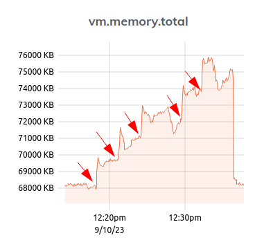
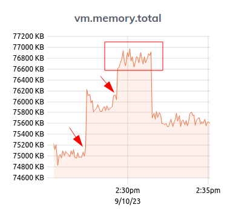

Phoenix websockets
Published on 2023-10-01
How much memory does an idle connection take?
Difficult to measure, but seems to be around 33kb.
| Amount of connections | VM Mem | VM Mem increase | Avg per connection |
|---|---|---|---|
| 0 | 68.2mb | -- | -- |
| 40 | 69.5mb | +1.3mb | 32kb |
| 80 | 70.9mb | +1.4mb | 33kb |
| 120 | 72.3mb | +1.4mb | 33kb |
| 160 | 73.8mb | +1.5mb | 34kb |
| 200 | 74.5mb | +0.7mb | 31kb |
| disconnect all | 68.3mb | -6.3mb | -- |
 Arrows indicate the moment for each burst of 40 connections.
How much memory does it take to broadcast a message?
Even more difficult to measure. Here's what I did:
- 20 connect users.
- 1 broadcasts to 2, 2 broadcasts to 1. 3 broadcasts to 4, 4 broadcasts to 3. And so on.
- All users broadcast a "Hello world" message every 500ms to the connected partner. Total 40 broadcats per second.

The first arrow shows the moment 20 users connected. Second arrow shows the moment broadcasting started. Rectangle shows the duration of the broadcasting